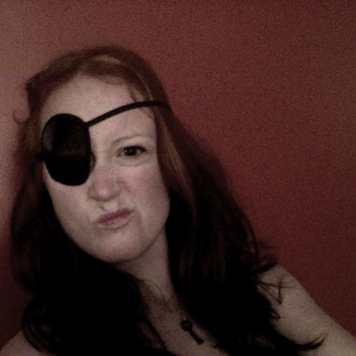
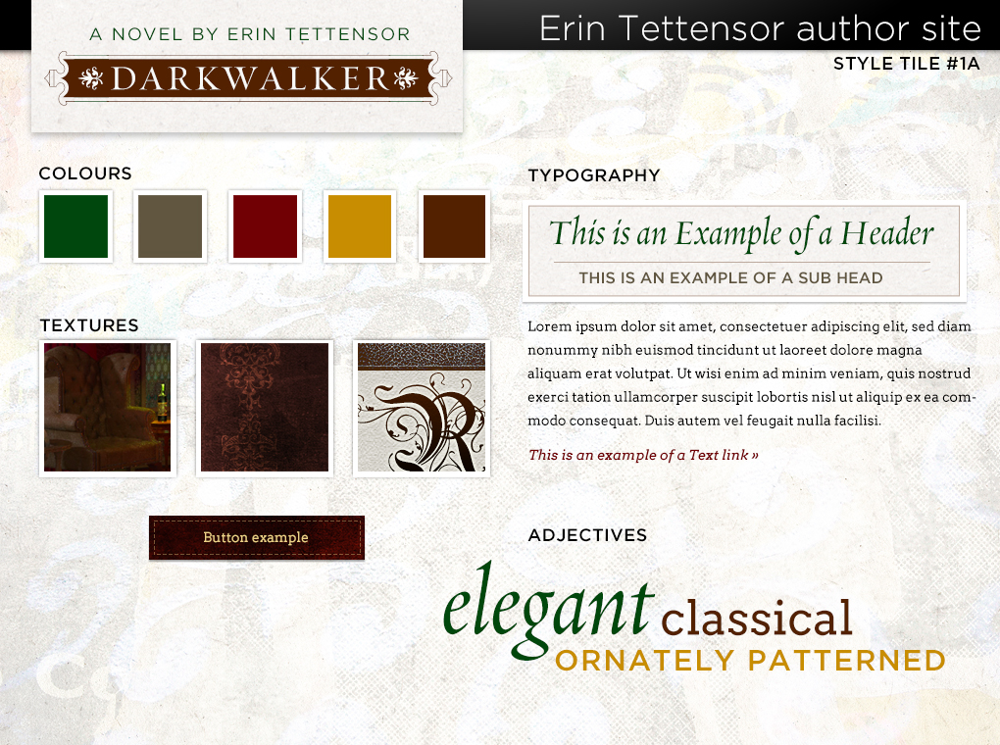
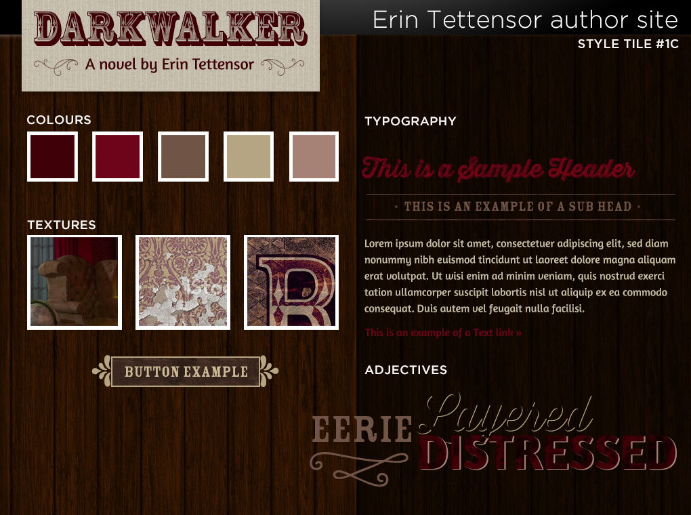
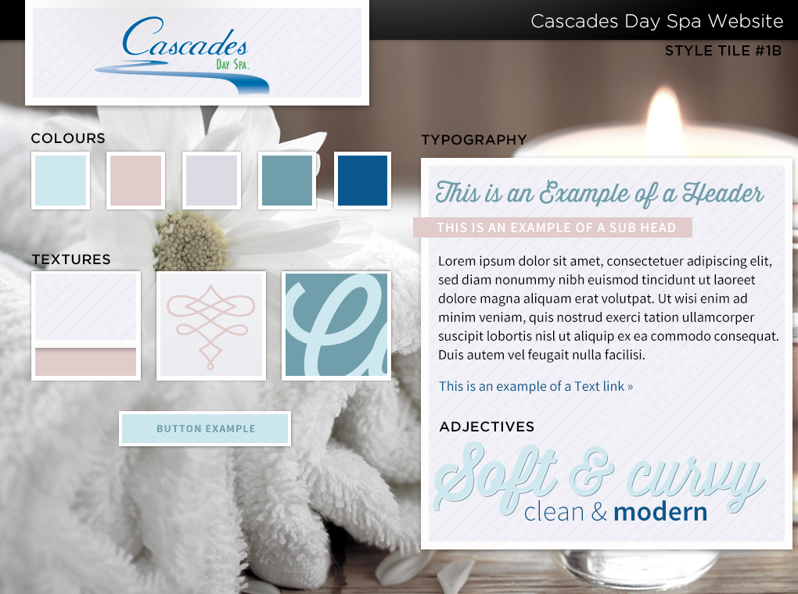
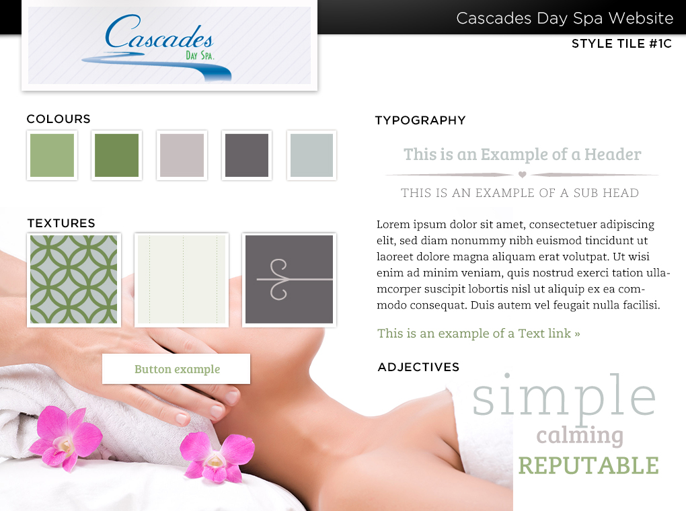

I broke up
with Photoshop (and so can you!)
Hello! My name is Sarah.
- …and I have a Photoshop problem.
- My problem is that I hate it.
This is what I'm going to talk about. My name is Sarah.
- Style tiles
- Starter themes
- CSS precompilers
- Icon fonts
- Browser tools
Style Tiles WTF is that?
- Why can’t we just use mockups?
- WTF is a style tile?
Style Tiles Initial style tiles: EL Tettensor


Style Tiles Final responsive site: EL Tettensor

Style Tiles Initial style tiles: Cascades Spa


Style Tiles Final responsive site: Cascades Spa

Style Tiles It’s this thing!
- a simpler way of communicating visual styles
- more complex than a moodboard, less complex than a full mockup
- super for responsive sites
- allow for faster iteration than traditional mockups
Style Tiles How do I do them?
- Ask lots of questions.
- Set expectations in advance
- Download a template from here: styletil.es
Starter Themes Start me up
- Your options: start from scratch; use a starter theme; or use a framework/parent theme
- Starter themes fall somewhere in the middle
- And there are a lot of them!
Starter Themes Why I like them
- Provide a clean starting point with basics established
- Baked-in components: grid, sometimes a CSS framework, basic classes, SCSS/LESS configuration, etc.
- More control (but not too much!)
- Less of a learning curve than a full-blown framework
- Typically free & open-source, with active development communities
Starter Themes …so how do you pick one?
- Different projects have different needs
- Evaluate the requirements first
- Research: it's not just for nerds anymore
- Check for active development on GitHub
Starter Themes Suggested themes
- underscores: just the very basics
- Roots: full-featured, uses Bootstrap/Less
- Bones: simple, uses SCSS (use Susy for your grid!)
- FoundationPress: if you're looking to use Zurb's Foundation framework
CSS Precompilers CSS on steriods (without all the rage)
- Smarter, more programmatic way of writing CSS
- Pick your poison: Less, Sass, SCSS, Stylus
- Compilers turn it into vanilla CSS
- Frameworks (Compass) add additional features and mixins
CSS Precompilers Why bother?
- Write your code faster
- DRY as a bone
- More maintainable code
- CSS partials
CSS Precompilers Let’s see some examples!
Sassy CSS
a {
color: $link-color;
text-decoration: none;
&:hover, &:focus {
color: darken($link-color, 20%);
background: transparentize($link-color, .1);
}
}
Mousey CSS
a {
color: #403d38;
text-decoration: none;
}
a:hover, a:focus {
color: #0a0908;
background: rgba(64, 61, 56, 0.9);
}
CSS Precompilers Let’s see some examples!
Sassy CSS
.intro {
@include colour-scheme(blue);
}
.styletiles {
@include colour-scheme(green);
}
Mousey CSS
.intro h2 {
border-color: blue;
}
.intro h2 span {
color: blue;
}
.intro h3 {
color: blue;
}
.intro em {
color: blue;
}
.intro i {
background-color: blue;
}
.intro a {
color: #2626d9;
}
.intro a:hover {
color: #0000cc;
background-color: rgba(0, 0, 255, 0.8);
}
.styletiles h2 {
border-color: green;
}
.styletiles h2 span {
color: green;
}
.styletiles h3 {
color: green;
}
.styletiles em {
color: green;
}
.styletiles i {
background-color: green;
}
.styletiles a {
color: #136d13;
}
.styletiles a:hover {
color: #004d00;
background-color: rgba(0, 128, 0, 0.8);
}
Icon fonts Why bother?
- What’s wrong with images anyway?
- Less overhead
- Easily scale, change colour, edit style
- Simplified hover effects
Icon fonts Show me an example, dammit!
HTML
<i class="icon-skull"></i>
CSS
i {
display: inline-block;
margin: 0.4em 0.2em;
padding: 0.45em;
border: 10px solid #F9F9F5;
background: #E8A4C1;
border-radius: 50%;
}
i:hover {
background-color: rgba(232, 164, 193, 0.25);
color: #E8A4C1;
border-color: #E8A4C1;
}
Icon fonts I want some!
Browser tools What are they good for?
- Baked into all modern browsers
- Editing on-the-fly for side-by-side development
- Great way to test quick changes visually (take screenshots!)
- Responsive views
Browser tools Let's see what we can do
Screenshots!
That’s all!Oh goody, she’s finally going to stop rambling
- Remember: focus on choosing the tools that suit the project.
- Develop your own toolchain.
- Document yourself!
- Try new things!
- And don’t go running back to Photoshop.
Thanks for listening. I’m probably going to go throw up now.
- sarah@triggersandsparks.com
- @sarahsemark
- github.com/sarahsemark
- Slides: sarahsemark.com/talks/photoshop
/